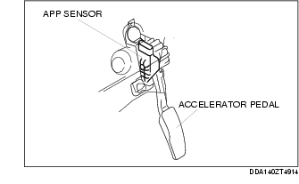
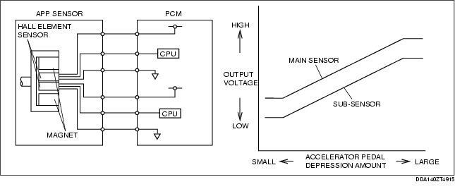

Accelerator pedal position (APP) sensor construction/operation [ZY]
• The sensor is installed on the accelerator pedal and detects how much the accelerator pedal is depressed.

• The Hall element design has been adopted on the sensor.
• A non contact type sensor has been adopted to improve durability.
• The APP sensor is composed of the main sensor and sub sensor, and detects the accelerator opening angle with these two sensors (main and sub).
• Even if a malfunction occurs in either one of the sensors, the detection is performed with a normal sensor drive-by-wire control is maintained.
• If both the MAIN and SUB sensors for the APP sensor malfunction, signals necessary for the drive-by-wire control are not input to the PCM and the drive-by-wire control is disabled.
• However, even though the drive-by-wire control is disabled, the throttle valve opening angle necessary for minimum driving is maintained mechanically.
